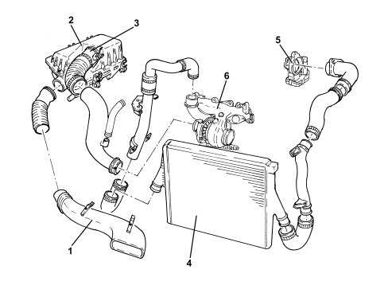

INTRODUCTION - ENGINE AIR SUPPLY CIRCUIT
- Path
- Descriptions > 10 ENGINE > 1048 ENGINE AIR SUPPLY CIRCUIT > INTRODUCTION - ENGINE AIR SUPPLY CIRCUIT
- Kind
- system description
- Applies to
- engines: 1.9 JTD 16v; all production periods
- Interactive page
- https://sloeber94.github.io/elrnDB-fCrm/en/#/194002376
Applies to: engines: 1.9 JTD 16v; all production periods
AIR SUPPLY SYSTEM

1. Cold air intake
2. Air filter assembly
3. Air flow meter
4. Air-air heat exchanger (intercooler)
5. Throttle body
6. Turbocharger